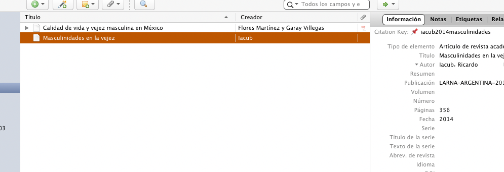
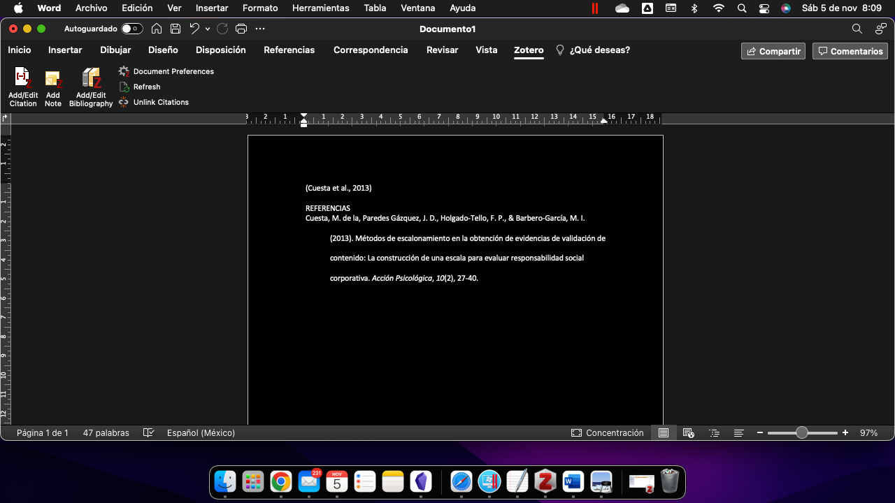

<!DOCTYPE html>
<html lang="en">
  <head>
    <meta charset="utf-8" />
    <meta name="viewport" content="width=device-width, initial-scale=1.0, maximum-scale=1.0, user-scalable=no" />

    <title></title>
    <link rel="stylesheet" href="dist/reveal.css" />
    <link rel="stylesheet" href="dist/theme/night.css" id="theme" />
    <link rel="stylesheet" href="plugin/highlight/zenburn.css" />
	<link rel="stylesheet" href="css/layout.css" />
	<link rel="stylesheet" href="plugin/customcontrols/style.css">

	<link rel="stylesheet" href="plugin/reveal-pointer/pointer.css" />


    <script defer src="dist/fontawesome/all.min.js"></script>

	<script type="text/javascript">
		var forgetPop = true;
		function onPopState(event) {
			if(forgetPop){
				forgetPop = false;
			} else {
				parent.postMessage(event.target.location.href, "app://obsidian.md");
			}
        }
		window.onpopstate = onPopState;
		window.onmessage = event => {
			if(event.data == "reload"){
				window.document.location.reload();
			}
			forgetPop = true;
		}

		function fitElements(){
			const itemsToFit = document.getElementsByClassName('fitText');
			for (const item in itemsToFit) {
				if (Object.hasOwnProperty.call(itemsToFit, item)) {
					var element = itemsToFit[item];
					fitElement(element,1, 1000);
					element.classList.remove('fitText');
				}
			}
		}

		function fitElement(element, start, end){

			let size = (end + start) / 2;
			element.style.fontSize = `${size}px`;

			if(Math.abs(start - end) < 1){
				while(element.scrollHeight > element.offsetHeight){
					size--;
					element.style.fontSize = `${size}px`;
				}
				return;
			}

			if(element.scrollHeight > element.offsetHeight){
				fitElement(element, start, size);
			} else {
				fitElement(element, size, end);
			}		
		}


		document.onreadystatechange = () => {
			fitElements();
			if (document.readyState === 'complete') {
				if (window.location.href.indexOf("?export") != -1){
					parent.postMessage(event.target.location.href, "app://obsidian.md");
				}
				if (window.location.href.indexOf("print-pdf") != -1){
					let stateCheck = setInterval(() => {
						clearInterval(stateCheck);
						window.print();
					}, 250);
				}
			}
	};


        </script>
  </head>
  <body>
    <div class="reveal">
      <div class="slides"><section  data-markdown><script type="text/template"><!-- .slide: class="drop" data-background-image="zotero/img/fondo.png" -->
<div class="" style="position: absolute; left: 0px; top: 0px; height: 700px; width: 960px; min-height: 700px; display: flex; flex-direction: column; align-items: center; justify-content: center" absolute="true">

## Introducción

**`Zotero`** es un software gratuito de código abierto que gestiona citas y referencias en múltiples estilos
</div></script></section><section  data-markdown><script type="text/template"><!-- .slide: class="drop" data-background-image="zotero/img/fondo.png" -->
<div class="" style="position: absolute; left: 0px; top: 0px; height: 700px; width: 960px; min-height: 700px; display: flex; flex-direction: column; align-items: center; justify-content: center" absolute="true">

### En este sesión:
1. instalación
2. 2. Reconocimiento de la interface
3. 3. Agregar referencias a la base de datos Zotero
4. 4. Insertar citas en MS Word
5. 5. Insertar lista de referencias o bibliografía
</div></script></section><section  data-markdown><script type="text/template"><!-- .slide: class="drop" data-background-image="zotero/img/fondo.png" -->
<div class="" style="position: absolute; left: 0px; top: 0px; height: 700px; width: 960px; min-height: 700px; display: flex; flex-direction: column; align-items: center; justify-content: center" absolute="true">

# 1. instalación
</div></script></section><section  data-markdown><script type="text/template"><!-- .slide: class="drop" data-background-image="zotero/img/fondo.png" -->
<div class="" style="position: absolute; left: 0px; top: 0px; height: 700px; width: 960px; min-height: 700px; display: flex; flex-direction: column; align-items: center; justify-content: center" absolute="true">

#### Ingfresar al sitio [http://zotero.org](http://zotero.org)


##### Hacer clic en el botón rojo de Descarga
</div></script></section><section  data-markdown><script type="text/template"><!-- .slide: class="drop" data-background-image="zotero/img/fondo.png" -->
<div class="" style="position: absolute; left: 0px; top: 0px; height: 700px; width: 960px; min-height: 700px; display: flex; flex-direction: column; align-items: center; justify-content: center" absolute="true">

### Seleccionar la opción para Windows o Mac

</div></script></section><section  data-markdown><script type="text/template"><!-- .slide: class="drop" data-background-image="zotero/img/fondo.png" -->
<div class="" style="position: absolute; left: 0px; top: 0px; height: 700px; width: 960px; min-height: 700px; display: flex; flex-direction: column; align-items: center; justify-content: center" absolute="true">

##### Instalar el archivo descargado


</div></script></section><section  data-markdown><script type="text/template"><!-- .slide: class="drop" data-background-image="zotero/img/fondo.png" -->
<div class="" style="position: absolute; left: 0px; top: 0px; height: 700px; width: 960px; min-height: 700px; display: flex; flex-direction: column; align-items: center; justify-content: center" absolute="true">

#### 1. Instalación
<split gap="3">
<strong><br><br><br>Haz cli en "Sí"<br> para continuar</strong>


</split>
</div></script></section><section  data-markdown><script type="text/template"><!-- .slide: class="drop" data-background-image="zotero/img/fondo.png" -->
<div class="" style="position: absolute; left: 0px; top: 0px; height: 700px; width: 960px; min-height: 700px; display: flex; flex-direction: column; align-items: center; justify-content: center" absolute="true">

#### 1. Instalación


</div></script></section><section  data-markdown><script type="text/template"><!-- .slide: class="drop" data-background-image="zotero/img/fondo.png" -->
<div class="" style="position: absolute; left: 0px; top: 0px; height: 700px; width: 960px; min-height: 700px; display: flex; flex-direction: column; align-items: center; justify-content: center" absolute="true">

#### 1. Instalación

</div></script></section><section  data-markdown><script type="text/template"><!-- .slide: class="drop" data-background-image="zotero/img/fondo.png" -->
<div class="" style="position: absolute; left: 0px; top: 0px; height: 700px; width: 960px; min-height: 700px; display: flex; flex-direction: column; align-items: center; justify-content: center" absolute="true">

#### 1. Instalación

</div></script></section><section  data-markdown><script type="text/template"><!-- .slide: class="drop" data-background-image="zotero/img/fondo.png" -->
<div class="" style="position: absolute; left: 0px; top: 0px; height: 700px; width: 960px; min-height: 700px; display: flex; flex-direction: column; align-items: center; justify-content: center" absolute="true">

#### 1. Instalación

</div></script></section><section  data-markdown><script type="text/template"><!-- .slide: class="drop" data-background-image="zotero/img/fondo.png" -->
<div class="" style="position: absolute; left: 0px; top: 0px; height: 700px; width: 960px; min-height: 700px; display: flex; flex-direction: column; align-items: center; justify-content: center" absolute="true">

#### 1. Instalación


</div></script></section><section  data-markdown><script type="text/template"><!-- .slide: class="drop" data-background-image="zotero/img/fondo.png" -->
<div class="" style="position: absolute; left: 0px; top: 0px; height: 700px; width: 960px; min-height: 700px; display: flex; flex-direction: column; align-items: center; justify-content: center" absolute="true">

#### 1. Instalación

</div></script></section><section  data-markdown><script type="text/template"><!-- .slide: class="drop" data-background-image="zotero/img/fondo.png" -->
<div class="" style="position: absolute; left: 0px; top: 0px; height: 700px; width: 960px; min-height: 700px; display: flex; flex-direction: column; align-items: center; justify-content: center" absolute="true">

# 2. Reconocimiento de la interface
</div></script></section><section  data-markdown><script type="text/template"><!-- .slide: class="drop" data-background-image="zotero/img/fondo.png" -->
<div class="" style="position: absolute; left: 0px; top: 0px; height: 700px; width: 960px; min-height: 700px; display: flex; flex-direction: column; align-items: center; justify-content: center" absolute="true">

#### 2. Reconocimiento de la interfaz...

</div></script></section><section  data-markdown><script type="text/template"><!-- .slide: class="drop" data-background-image="zotero/img/fondo.png" -->
<div class="" style="position: absolute; left: 0px; top: 0px; height: 700px; width: 960px; min-height: 700px; display: flex; flex-direction: column; align-items: center; justify-content: center" absolute="true">

#### 2. Reconocimiento de la interfaz...
#### a) Colecciones


</div></script></section><section  data-markdown><script type="text/template"><!-- .slide: class="drop" data-background-image="zotero/img/fondo.png" -->
<div class="" style="position: absolute; left: 0px; top: 0px; height: 700px; width: 960px; min-height: 700px; display: flex; flex-direction: column; align-items: center; justify-content: center" absolute="true">

#### 2. Reconocimiento de la interfaz...
#### b) Listado de documentos


</div></script></section><section  data-markdown><script type="text/template"><!-- .slide: class="drop" data-background-image="zotero/img/fondo.png" -->
<div class="" style="position: absolute; left: 0px; top: 0px; height: 700px; width: 960px; min-height: 700px; display: flex; flex-direction: column; align-items: center; justify-content: center" absolute="true">

#### 2. Reconocimiento de la interfaz...
#### c) Información del documento


</div></script></section><section  data-markdown><script type="text/template"><!-- .slide: class="drop" data-background-image="zotero/img/fondo.png" -->
<div class="" style="position: absolute; left: 0px; top: 0px; height: 700px; width: 960px; min-height: 700px; display: flex; flex-direction: column; align-items: center; justify-content: center" absolute="true">

# 3. Agregar referencias a la base de datos Zotero
</div></script></section><section  data-markdown><script type="text/template"><!-- .slide: class="drop" data-background-image="zotero/img/fondo.png" -->
<div class="" style="position: absolute; left: 0px; top: 0px; height: 700px; width: 960px; min-height: 700px; display: flex; flex-direction: column; align-items: center; justify-content: center" absolute="true">

#### 3. Agregar Referencias... 

1. Agregar de forma manual
2. Agregar mediante marcador (ISBN, DOI,etc)
3.  Mediante el *conector de navegador para Zotero*
4. Mediante referencias ***Google Académico***
</div></script></section><section  data-markdown><script type="text/template"><!-- .slide: class="drop" data-background-image="zotero/img/fondo.png" -->
<div class="" style="position: absolute; left: 0px; top: 0px; height: 700px; width: 960px; min-height: 700px; display: flex; flex-direction: column; align-items: center; justify-content: center" absolute="true">

#### 3. Agregar Referencias... 

(1) Agregar de forma manual
<!-- .element: class="fragment" -->
</div></script></section><section  data-markdown><script type="text/template"><!-- .slide: class="drop" data-background-image="zotero/img/fondo.png" -->
<div class="" style="position: absolute; left: 0px; top: 0px; height: 700px; width: 960px; min-height: 700px; display: flex; flex-direction: column; align-items: center; justify-content: center" absolute="true">

#### 3. Agregar referencias... (1) Formulario manual

<split even no-margin>


<strong><br><br><br><br><- Haz clic en </strong>


<strong>Elige el tipo de documento</strong>
</split>
</div></script></section><section  data-markdown><script type="text/template"><!-- .slide: class="drop" data-background-image="zotero/img/fondo.png" -->
<div class="" style="position: absolute; left: 0px; top: 0px; height: 700px; width: 960px; min-height: 700px; display: flex; flex-direction: column; align-items: center; justify-content: center" absolute="true">

#### 3. Agregar referencias... (1) Formulario manual


</div></script></section><section  data-markdown><script type="text/template"><!-- .slide: class="drop" data-background-image="zotero/img/fondo.png" -->
<div class="" style="position: absolute; left: 0px; top: 0px; height: 700px; width: 960px; min-height: 700px; display: flex; flex-direction: column; align-items: center; justify-content: center" absolute="true">

#### 3. Agregar Referencias... 

(1) Agregar de forma manual


(2) Agregar mediante marcador (ISBN, DOI,etc)
<!-- .element: class="fragment" -->
</div></script></section><section  data-markdown><script type="text/template"><!-- .slide: class="drop" data-background-image="zotero/img/fondo.png" -->
<div class="" style="position: absolute; left: 0px; top: 0px; height: 700px; width: 960px; min-height: 700px; display: flex; flex-direction: column; align-items: center; justify-content: center" absolute="true">

#### 3. Agregar referencias... (2) ISBN,DOI,etc...
<split gap="2">
<strong><br>Busca el ícono<br>--------></strong>


</split>

</div></script></section><section  data-markdown><script type="text/template"><!-- .slide: class="drop" data-background-image="zotero/img/fondo.png" -->
<div class="" style="position: absolute; left: 0px; top: 0px; height: 700px; width: 960px; min-height: 700px; display: flex; flex-direction: column; align-items: center; justify-content: center" absolute="true">

#### 3. Agregar Referencias... 

(1) Agregar de forma manual

(2) Agregar mediante marcador (ISBN, DOI,etc)

(3) Mediante el *conector de navegador para Zotero*
<!-- .element: class="fragment" -->
</div></script></section><section  data-markdown><script type="text/template"><!-- .slide: class="drop" data-background-image="zotero/img/fondo.png" -->
<div class="" style="position: absolute; left: 0px; top: 0px; height: 700px; width: 960px; min-height: 700px; display: flex; flex-direction: column; align-items: center; justify-content: center" absolute="true">

#### 3. Agregar Referencias...  (3) Conector de navegador

<strong>Pasos:</strong>

1. Ir a aplicación **]Zotero`**
2. Hacer clic en *`Herramientas`*
3. Hacer clic en *`Instalar conector de navegador`*
4. En la página que se abre, hacer clic en el botón ~Ìnstalar`~
</div></script></section><section  data-markdown><script type="text/template"><!-- .slide: class="drop" data-background-image="zotero/img/fondo.png" -->
<div class="" style="position: absolute; left: 0px; top: 0px; height: 700px; width: 960px; min-height: 700px; display: flex; flex-direction: column; align-items: center; justify-content: center" absolute="true">

#### 3. Agregar Referencias...  (3) Conector de navegador


</div></script></section><section  data-markdown><script type="text/template"><!-- .slide: class="drop" data-background-image="zotero/img/fondo.png" -->
<div class="" style="position: absolute; left: 0px; top: 0px; height: 700px; width: 960px; min-height: 700px; display: flex; flex-direction: column; align-items: center; justify-content: center" absolute="true">

#### 3. Agregar Referencias...  (3) Conector de navegador


</div></script></section><section  data-markdown><script type="text/template"><!-- .slide: class="drop" data-background-image="zotero/img/fondo.png" -->
<div class="" style="position: absolute; left: 0px; top: 0px; height: 700px; width: 960px; min-height: 700px; display: flex; flex-direction: column; align-items: center; justify-content: center" absolute="true">

#### 3. Agregar Referencias...  (3) Conector de navegador

5. Al aparecer el ícono en el navegador, ir a *]Zotero]* y elegir la carpeta (colección) donde queremos guardar el elemento
6. Regresar al navegador, ir a la página que deseamos guardar, hacer clic en el ícono de ~`Zotero`~ y luego *enter*
</div></script></section><section  data-markdown><script type="text/template"><!-- .slide: class="drop" data-background-image="zotero/img/fondo.png" -->
<div class="" style="position: absolute; left: 0px; top: 0px; height: 700px; width: 960px; min-height: 700px; display: flex; flex-direction: column; align-items: center; justify-content: center" absolute="true">

#### 3. Agregar Referencias...  (3) Conector de navegador


</div></script></section><section  data-markdown><script type="text/template"><!-- .slide: class="drop" data-background-image="zotero/img/fondo.png" -->
<div class="" style="position: absolute; left: 0px; top: 0px; height: 700px; width: 960px; min-height: 700px; display: flex; flex-direction: column; align-items: center; justify-content: center" absolute="true">

#### 3. Agregar Referencias... 

(1) Agregar de forma manual

(2) Agregar mediante marcador (ISBN, DOI,etc)

(3) Mediante el *conector de navegador para Zotero*

(4) Mediante referencias ***Google Académico***
<!-- .element: class="fragment" -->
</div></script></section><section ><section data-markdown><script type="text/template"><!-- .slide: class="drop" data-background-image="zotero/img/fondo.png" -->
<div class="" style="position: absolute; left: 0px; top: 0px; height: 700px; width: 960px; min-height: 700px; display: flex; flex-direction: column; align-items: center; justify-content: center" absolute="true">

#### 3. Agregar Referencias...  (Google Académico)

<strong>Pasos</strong>

1. Ir a *`Google Académico`*
2. Buscar el documento que deseamos
3. Hacer clic en el ícono   de las comillas
</div></script></section><section data-markdown><script type="text/template"><!-- .slide: class="drop" data-background-image="zotero/img/fondo.png" -->
<div class="" style="position: absolute; left: 0px; top: 0px; height: 700px; width: 960px; min-height: 700px; display: flex; flex-direction: column; align-items: center; justify-content: center" absolute="true">

#### 3. Agregar Referencias...  (Google Académico)


</div></script></section></section><section  data-markdown><script type="text/template"><!-- .slide: class="drop" data-background-image="zotero/img/fondo.png" -->
<div class="" style="position: absolute; left: 0px; top: 0px; height: 700px; width: 960px; min-height: 700px; display: flex; flex-direction: column; align-items: center; justify-content: center" absolute="true">

#### 3. Agregar Referencias...  (Google Académico)


</div></script></section><section  data-markdown><script type="text/template"><!-- .slide: class="drop" data-background-image="zotero/img/fondo.png" -->
<div class="" style="position: absolute; left: 0px; top: 0px; height: 700px; width: 960px; min-height: 700px; display: flex; flex-direction: column; align-items: center; justify-content: center" absolute="true">

#### 3. Agregar Referencias...  (Google Académico)

4. Hacer clic en *`Bibtex`*

</div></script></section><section  data-markdown><script type="text/template"><!-- .slide: class="drop" data-background-image="zotero/img/fondo.png" -->
<div class="" style="position: absolute; left: 0px; top: 0px; height: 700px; width: 960px; min-height: 700px; display: flex; flex-direction: column; align-items: center; justify-content: center" absolute="true">

#### 3. Agregar Referencias...  (Google Académico)

5. Seleccionar y copiar **TODO** el texto que aparece


</div></script></section><section  data-markdown><script type="text/template"><!-- .slide: class="drop" data-background-image="zotero/img/fondo.png" -->
<div class="" style="position: absolute; left: 0px; top: 0px; height: 700px; width: 960px; min-height: 700px; display: flex; flex-direction: column; align-items: center; justify-content: center" absolute="true">

#### 3. Agregar Referencias...  (Google Académico)

6. Finalmente ir a **`Zotero`** y hacer clic en *]Archivo-> Importar desde portapapeles]*  para agregar la referencia



</div></script></section><section  data-markdown><script type="text/template"><!-- .slide: class="drop" data-background-image="zotero/img/fondo.png" -->
<div class="" style="position: absolute; left: 0px; top: 0px; height: 700px; width: 960px; min-height: 700px; display: flex; flex-direction: column; align-items: center; justify-content: center" absolute="true">

# 4. Insertar citas en MS Word
</div></script></section><section  data-markdown><script type="text/template"><!-- .slide: class="drop" data-background-image="zotero/img/fondo.png" -->
<div class="" style="position: absolute; left: 0px; top: 0px; height: 700px; width: 960px; min-height: 700px; display: flex; flex-direction: column; align-items: center; justify-content: center" absolute="true">

### Verificar que se haya instalado el complemento para MS Word


</div></script></section><section  data-markdown><script type="text/template"><!-- .slide: class="drop" data-background-image="zotero/img/fondo.png" -->
<div class="" style="position: absolute; left: 0px; top: 0px; height: 700px; width: 960px; min-height: 700px; display: flex; flex-direction: column; align-items: center; justify-content: center" absolute="true">

#### 4. Insertar citas...

1. Abrir  **`MS Word`** 
2. Abrir **`Zotero`** y minimizar
3. Hacer clic en la pestaña  **`Zotero`**
4. Haz clic en el botón *`Add/Edit citations`*

------

</div></script></section><section  data-markdown><script type="text/template"><!-- .slide: class="drop" data-background-image="zotero/img/fondo.png" -->
<div class="" style="position: absolute; left: 0px; top: 0px; height: 700px; width: 960px; min-height: 700px; display: flex; flex-direction: column; align-items: center; justify-content: center" absolute="true">

#### 4. Insertar citas...

5. Buscar el estilo deseado en el cuaro y hacer clic en *`Aceptar`*


</div></script></section><section  data-markdown><script type="text/template"><!-- .slide: class="drop" data-background-image="zotero/img/fondo.png" -->
<div class="" style="position: absolute; left: 0px; top: 0px; height: 700px; width: 960px; min-height: 700px; display: flex; flex-direction: column; align-items: center; justify-content: center" absolute="true">

#### 4. Insertar citas...


6. En el cuadro que se abre, teclear el nombre de autor o alguna palabra para desplegar una lista de referencias


---#### 4. Insertar citas...

<strong>Resultado</strong>

</div></script></section><section  data-markdown><script type="text/template"><!-- .slide: class="drop" data-background-image="zotero/img/fondo.png" -->
<div class="" style="position: absolute; left: 0px; top: 0px; height: 700px; width: 960px; min-height: 700px; display: flex; flex-direction: column; align-items: center; justify-content: center" absolute="true">

# 5. Insertar lista de referencias o bibliografía
</div></script></section><section  data-markdown><script type="text/template"><!-- .slide: class="drop" data-background-image="zotero/img/fondo.png" -->
<div class="" style="position: absolute; left: 0px; top: 0px; height: 700px; width: 960px; min-height: 700px; display: flex; flex-direction: column; align-items: center; justify-content: center" absolute="true">

#### 5. Agregar bibliografía...
<strong>Pasos</strong>

1. Al final del documento agregar untítulo para las referencias (Bibliografía, Referencias o Lista de referencias)
2. Hacel clic en el bitón  *`Add bibliography`* y listo
-----


</div></script></section><section  data-markdown><script type="text/template"><!-- .slide: class="drop" data-background-image="zotero/img/fondo.png" -->
<div class="" style="position: absolute; left: 0px; top: 0px; height: 700px; width: 960px; min-height: 700px; display: flex; flex-direction: column; align-items: center; justify-content: center" absolute="true">

#### 5. Agregar bibliografía...


</div></script></section><section  data-markdown><script type="text/template"><!-- .slide: class="drop" data-background-image="zotero/img/fondo.png" -->
<div class="" style="position: absolute; left: 0px; top: 0px; height: 700px; width: 960px; min-height: 700px; display: flex; flex-direction: column; align-items: center; justify-content: center" absolute="true">

# Gracias por su atención
</div></script></section></div>
    </div>

    <script src="dist/reveal.js"></script>

    <script src="plugin/markdown/markdown.js"></script>
    <script src="plugin/highlight/highlight.js"></script>
    <script src="plugin/zoom/zoom.js"></script>
    <script src="plugin/notes/notes.js"></script>
    <script src="plugin/math/math.js"></script>
	<script src="plugin/mermaid/mermaid.js"></script>
	<script src="plugin/chart/chart.min.js"></script>
	<script src="plugin/chart/plugin.js"></script>
	<script src="plugin/customcontrols/plugin.js"></script>
	<script src="plugin/reveal-pointer/pointer.js"></script>

    <script>
      function extend() {
        var target = {};
        for (var i = 0; i < arguments.length; i++) {
          var source = arguments[i];
          for (var key in source) {
            if (source.hasOwnProperty(key)) {
              target[key] = source[key];
            }
          }
        }
        return target;
      }

	  function isLight(color) {
		let hex = color.replace('#', '');

		// convert #fff => #ffffff
		if(hex.length == 3){
			hex = `${hex[0]}${hex[0]}${hex[1]}${hex[1]}${hex[2]}${hex[2]}`;
		}

		const c_r = parseInt(hex.substr(0, 2), 16);
		const c_g = parseInt(hex.substr(2, 2), 16);
		const c_b = parseInt(hex.substr(4, 2), 16);
		const brightness = ((c_r * 299) + (c_g * 587) + (c_b * 114)) / 1000;
		return brightness > 155;
	}

	var bgColor = getComputedStyle(document.documentElement).getPropertyValue('--r-background-color').trim();
	var isLight = isLight(bgColor);

	if(isLight){
		document.body.classList.add('has-light-background');
	} else {
		document.body.classList.add('has-dark-background');
	}

      // default options to init reveal.js
      var defaultOptions = {
        controls: true,
        progress: true,
        history: true,
        center: true,
        transition: 'default', // none/fade/slide/convex/concave/zoom
        plugins: [
          RevealMarkdown,
          RevealHighlight,
          RevealZoom,
          RevealNotes,
          RevealMath.MathJax3,
		  RevealMermaid,
		  RevealChart,
		  RevealCustomControls,
	      RevealPointer
        ],


    	allottedTime: 120 * 1000,

		mathjax3: {
			mathjax: 'plugin/math/mathjax/tex-mml-chtml.js',
		},
		markdown: {
		  gfm: true,
		  mangle: true,
		  pedantic: false,
		  smartLists: false,
		  smartypants: false,
		},

		mermaid: {
			theme: isLight ? 'default' : 'dark',
		},

		customcontrols: {
			controls: [
			]
		},
      };

      // options from URL query string
      var queryOptions = Reveal().getQueryHash() || {};

      var options = extend(defaultOptions, {"width":960,"height":700,"margin":0.04,"controls":true,"progress":true,"slideNumber":false,"transition":"slide","transitionSpeed":"default"}, queryOptions);
    </script>

    <script>
      Reveal.initialize(options);
    </script>
  </body>

  <!-- created with Advanced Slides -->
</html>
